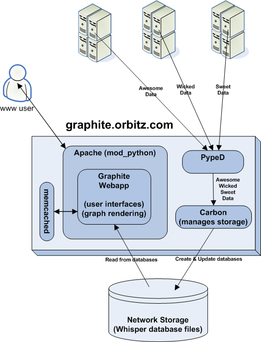
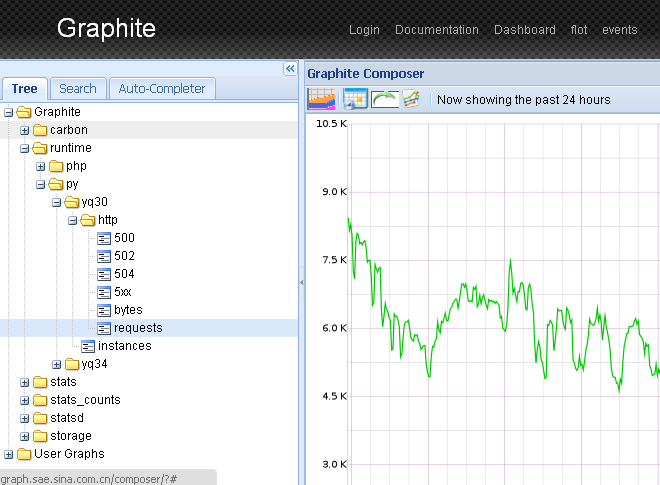
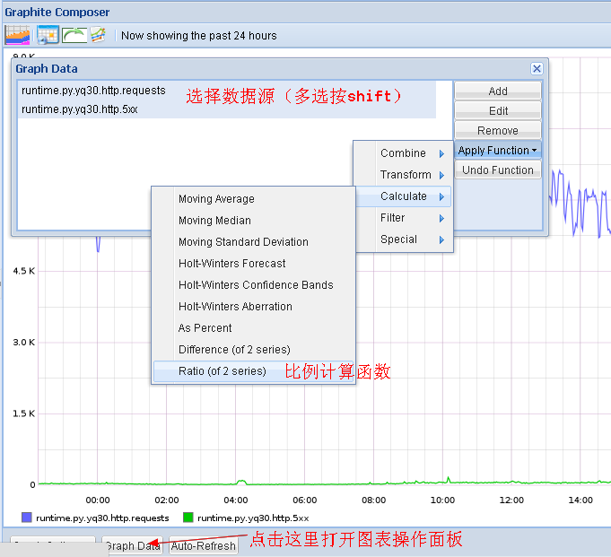
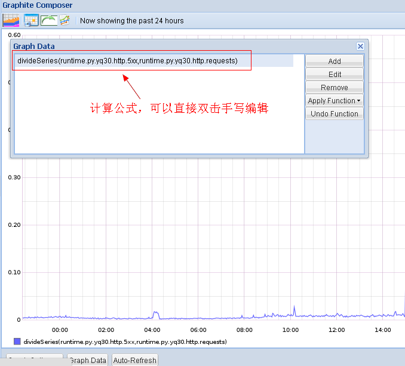
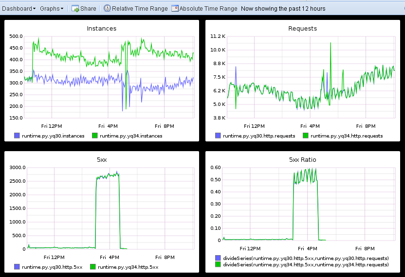
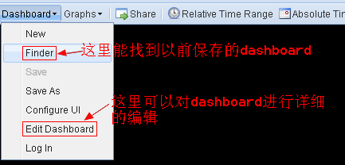
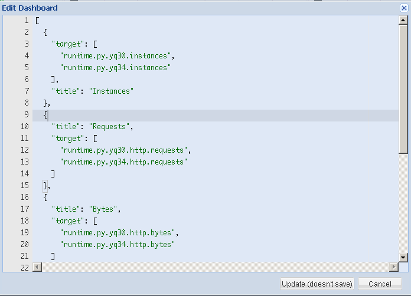

Graphite+StatsD 服务Metrics监控¶
Graphite¶
Graphite是一个database + 图形展示工具，我们可以将服务的各种指标数据发送给Graphite，Graphite的Web页面中会以曲线的形式展现这些数据，方便我们观察对比服务的运行状况。
下面是Graphite的架构图：
如何Feed in数据¶
纯文本协议
Shell:
echo "local.random.diceroll 4 `date +%s`" | nc -q0 ${SERVER} ${PORT}
Python:
import socket
sock = socket.socket(socket.AF_INET, socket.AF_DGRAM)
sock.sendto('runtime.py.yq30.instances 200 1324567980', (ip, port))
数据Feed in地址：udp://metrics.sae.sina.com.cn:2006
数据展示页面¶
Functions¶
grahpite中所有的曲线数据都是可以使用函数进行操作的
你也可以对这些生成的函数进行手工编辑：
Read more: http://graphite.readthedocs.org/en/1.0/functions.html
制作Dashboard¶
效果图：
点击graphite页面页面右上角的Dashboard链接，进入Dashboard页面，你可以直接在上面的面板中选择需要的曲线加入到dashboard中，所有的曲线都可以拖曳编辑。
当然你也可以直接打开dashboard的edit页面，按照下面两图手工编辑曲线的生成参数（生成复杂曲线的时候很有用）。
 [
{
"target": [
"runtime.py.yq30.instances",
"runtime.py.yq34.instances"
],
"title": "Instances"
},
{
"title": "5xx Ratio",
"target": [
"divideSeries(runtime.py.yq30.http.5xx,runtime.py.yq30.http.requests)",
"divideSeries(runtime.py.yq34.http.5xx,runtime.py.yq34.http.requests)"
]
}
]
这个json数组里的每一个元素定义了一张图，target定义了在图上要显示哪几条曲线，title是图的标题。
target可以是单个曲线，也可以是多个曲线使用function进行的变换后的曲线。比如上面的例子中，第二张图就展示了yq30和yq34两台机器上的http 5xx出现比例的曲线（5xx出现的次数除上总请求数）。